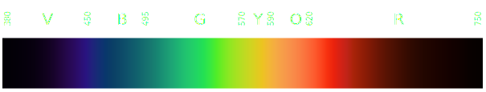
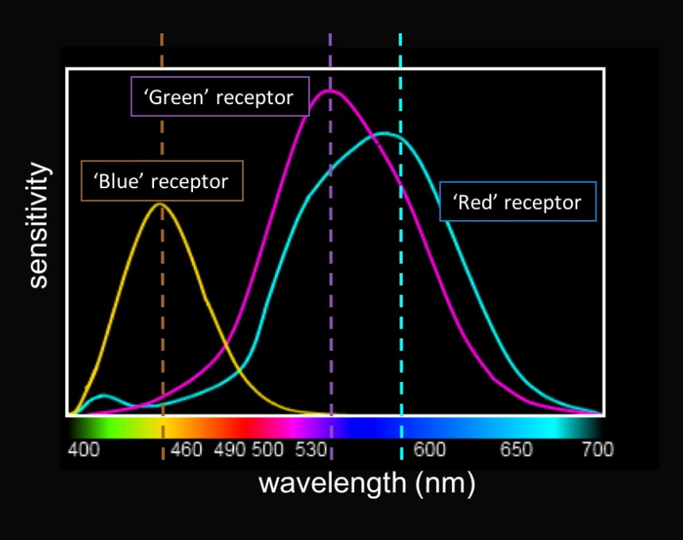
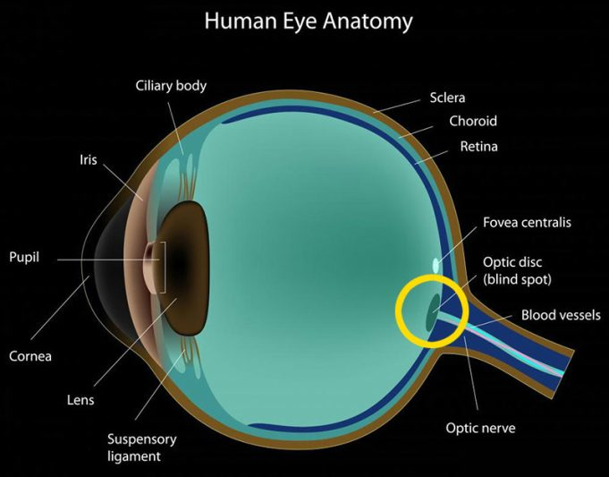
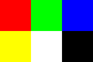

During the whole of a dull, dark, and soundless day in the autumn of the year, when the clouds hung oppressively low in the heavens,
I had been programming alone, on a laptop, a singularly dreary project; and at length found myself, as the shades of the evening
drew on, within view of the interpolated triangle. I know not how it was, but, with the first glimpse of the API,
a sense of insufferable doom pervaded my spirit.
Take a look at this image:

What is it?
Well, it's a teapot.
Is it real?
Of course not.
This teapot was inspired by a real teapot,
but, alas, the image above is not the image of a real teapot.
It's an imitation, an artificial reproduction, a simulacrum, and a convincing one at that.
Does it matter that it is not real? What is the difference between the real and the fake?
I'm not here to discuss philosophy.
No, I'm here to tell you something more important:
You have been scammed.
A trillion-dollar industry has convinced you that you need to pay thousands of dollars to create your own simulacra.
And that you also need to write a thousand lines of code just to display a single triangle.
I am here to tell you that there's another way. That you can do all that by yourself.
I know you all probably think of me as a hero, and I accept this responsibility.
In your nightmares you send commands to your VkCommandBuffer, and it brings joy to your heart.
So bring up your terminal, open your favorite text editor, and let's make our own simulator.
You may use an IDE if you wish.
I am not here to teach you all the technicalities involved
in compiling and linking the source code, you will have to learn that somewhere else.
Nor will I teach you how to program in C.
But I will teach you the computer science behind generating images like that of the teapot above.
What is the first step in creating our own matrix?
We don't want to build a general-purpose simulation, we want to experience it, too.
That means we need some sort of a portal into another dimension -
a wardrobe that opens to Narnia.
There are different ways of accomplishing this. One of them is by creating an image, and then displaying it on an image viewer.
But there are so many image formats, which one to choose?
One of the simplest image formats is PPM.
Here's an example from wikipedia:
| P3 |
| 3 |
2 |
| 255 |
| 255 |
0 |
0 |
| 0 |
255 |
0 |
| 0 |
0 |
255 |
| 255 |
255 |
0 |
| 255 |
255 |
255 |
| 0 |
0 |
0 |
P3 denotes that this is an ASCII file.
3 and 2 are the width and the height of the image, respectively.
255 on the next line means "end of header". That is, everything that comes after this line are the actual colors of the image,
which we discuss next.
What is color? This may shock you when I say this, but, colors aren't real. They don't actually exist.
Colors are no more real than the Santa Claus who gifts you presents (or coal!) every Christmas.
We all partake in a great conspiracy when we open our eyes and see. Colors form an important part of our shared hallucination of the world,
apart from money and religion. It's funny when you think about it: the teapot that you saw earlier is a lie that approximates another lie
concocted by the buzzing of neurons inside your visual cortex.
In the real world we have something called the electromagnetic spectrum,
only a small part of which makes up the wavelengths that the human eye can see:

Worse, the cells within your eye have different sensitivities to different parts of the visible spectrum.
The image below which I yoinked from simplepsychology.org,
illustrates this nicely:

Yeah I inverted the colors so that it doesn't burn your eyes. Here's the real image.
The point is that you may see some colors "brighter" than others.
Also due to awkward wiring you have a blind spot:

"But... I don't see any dark patches in my vision?!", you might say.
Well, thanks to this oopsie-poopsie made by the clunky hand of evolution,
your brain now has to compensate for this by literally filling in the void.
Life decided that it would rather hallucinate than to actually see, i.e., you have always lived in your own Metaverse,
and you have never really touched grass.
By the way, cephalopods don't have this problem.
What I want you to get from all this is that everything is fake: you are fake, I am fake, your Mom is fake, etc.
That being said, the chicanery of light and color is often too complex for computers to handle
(especially when we want to generate our images fast).
Instead what we do is take the visible part of the electromagnetic spectrum and quantize it with reference to the intensity of three colors:
RED, GREEN, and BLUE.
We represent these intensities as an integer between 0 and 255.
This gives us a total of 256 * 256 * 256 = 16777216 (~16 million) colors to work with.
Take a look at that PPM image again. The first row is:
This array of numbers represents the RED color.
The next row is:
This is the GREEN color.
When we interpret the color information together with the width and the height values, we get the following image:

We now know that to generate images we will need a structure that stores width, height, and an array of numbers that represents the colors.
So, let us do that:
This creates the following image: